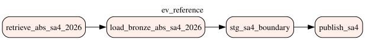
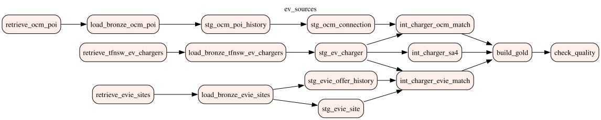

An on-premise ELT platform that turns four messy sources (open government data, a community API and an operator's own site data) into one trustworthy view of electric-vehicle charging in New South Wales, keeps it current with daily, change-aware runs, and watches itself with metrics, alerts and lineage.
Python only retrieves and lands files; every transformation is a versioned SQL model that owns one table.
EV Charging Locations: every public charger in NSW with operator, address, coordinates and rating.
last_modified before download, then SHA-256ASGS Edition 4 (2026) Statistical Area Level 4 boundaries, GDA2020.
Crowd-sourced global registry of charging sites, queried for the NSW bounding box.
/v3/poi), free API keyThe operator's own charger map: every site with its chargers, connector standards, power and tariff.
Rendered by Airflow from the DAG code (airflow dags show). publish_sa4 emits an Asset event that starts ev_sources when new boundaries arrive.


TfNSW charger points joined to ABS SA4 boundaries with ST_Covers, then enriched with
plug types, prices and bay counts from Evie's own data or Open Charge Map. Click a region or a charger.
Each choice is written up as a decision record in docs/decisions/.
ProblemDaily runs should not re-store or re-process identical data.
ChoicePer-source checks: CKAN last_modified, HTTP 304 for ABS, SHA-256 for OCM snapshots. Unchanged models are skipped too.
Rejected: trusting the portal's "Last Updated", which changed while the bytes did not.
ProblemBoundaries change yearly, chargers daily.
ChoiceA manual reference DAG and a daily DAG linked by an Airflow Asset. Initial and incremental loads are the same idempotent run.
Rejected: a separate initial-load DAG that would drift from the daily logic.
ProblemSources overwrite themselves; history disappears.
ChoiceEvery version keeps its rows, keyed by file hash and row number; _latest views serve current state; one ledger row per version.
Rejected: overwriting one file per source.
ProblemOCM only publishes the current state of each site.
ChoiceMERGE closes changed rows and inserts new periods per snapshot; a forced run replays all versions.
Rejected: storing full daily copies and diffing at query time.
ProblemTfNSW and OCM share no key and spell operators differently.
ChoiceDC-capable OCM site within 300 m; beyond 50 m the operator or address (trigram) must agree.
Rejected: substring operator matching, which paired unrelated operators.
ProblemTesla Motors , BP Pulse (AU), names truncated to 13 characters.
Choiceref.standard_term with TfNSW spellings as the standard, an editing screen and an audited history.
Rejected: alias lists hard-coded in SQL.
ProblemOpen Charge Map covered 41.8% of DC chargers; most gaps had no OCM site within 300 m at all.
ChoiceEvie's own site data, matched only to TfNSW chargers of the same operator, kept as SCD2 per site and AC/DC; Evie wins where both match. Coverage rose to —.
Rejected: loosening the OCM rules, which only paired chargers with other operators' sites.
ProblemSpellings like GET Electric defeat the rules; the trigram hint suggested the wrong operator.
ChoiceLangChain sends the spellings and the dictionary to an OpenAI mini model with a structured-output schema; proposals are validated, then accepted or rejected on the screen or in Slack.
Rejected: calling the model inside the daily pipeline, where a wrong answer would merge two operators unseen.
ProblemA failed or skipped day, a stalled source or a dropped volume went unnoticed.
ChoiceAirflow StatsD plus a database exporter in Prometheus, alert rules to Slack, and OpenLineage events so Marquez shows which task feeds which table.
Rejected: freshness alerts on every source, since TfNSW and ABS legitimately stay unchanged for months.
The local metadata app (Flask, port 8790) has two tabs: Meta, the standard term dictionary people curate, and Dashboard, the data quality result of every run. This is a working copy on the snapshot data: edits stay in your browser and reset on reload.
Each spelling seen in a source maps to one standard; TfNSW spellings are the standard. The pipeline lists spellings it does not know; a person maps each to a known operator or creates a new one, and the next run applies it. Every change is audited by a trigger.
| Spelling | Source | Rows | A · another spelling of | B · a new operator |
|---|
| Spelling | Proposal | Confidence | Reason | Decision |
|---|
| When | Who | Change | Term | Code |
|---|
| Source | Version in use loaded | Upstream last modified | Rows | vs previous | Versions |
|---|
| Check | Dataset | Severity | Status | Failed | % |
|---|
An error check that finds rows fails the Airflow run; warn and info are reported.
"Measured" is an info check describing the data, not a defect. Each run is appended to meta.data_quality_result, which the local app draws as a trend.
From gold.operator_summary, after operator names were standardized. Top 12 by operational chargers.
| Operator | Chargers | DC | Regions | Max kW | Avg $/kWh |
|---|
The daily snapshot sees Open Charge Map once a day. A producer polls it every 15 minutes for POIs modified since the last poll and streams them through Kafka and Spark Structured Streaming. Raw events land like batch Bronze; a view serves the latest state at once, and the next batch merges them into the same SCD2 history.
OCM modifiedsince, every 15 min
ev.ocm.poi.changes, key = OCM ID
Structured Streaming, 2 checkpointed queries
Parquet by event_date + bronze.ocm_poi_events
Hot: latest-price view
Cold: SCD2 history
The Parquet file sink commits through _spark_metadata; the PostgreSQL writer relies on a unique
(topic, partition, offset), so a micro-batch replayed after a crash is a no-op.
The stream only appends raw events. The history model stays the only writer of the SCD2 table and reads snapshots and events in arrival order, so a full replay equals the incremental result.
Rejected: the stream merging into the history itself, racing the batch.
Key = OCM ID keeps each site's changes in order; retention is unlimited, so after a database reset the stream re-lands every event from offset 0.
| OCM site | Operator | Price text | $/kWh | Status | In history |
|---|
From gold.ocm_price_latest. "In history" means the next batch has merged it into the SCD2 history.
Airflow sends StatsD metrics; a small exporter reads the data's own state from PostgreSQL (freshness, volume, quality, augmentation). Prometheus evaluates the alert rules and Alertmanager posts to Slack; Grafana shows one provisioned dashboard. Every task declares what it reads and writes, and OpenLineage sends it to Marquez.
StatsD: runs, tasks, scheduler
Data metrics from the database
30 days, alert rules
Slack, resolved messages too
Dashboard · lineage graph
| Alert | Severity | Fires when |
|---|
The same declarations the tasks send to Marquez (orchestration/lineage.py). Select a table to trace what feeds it and what it feeds.